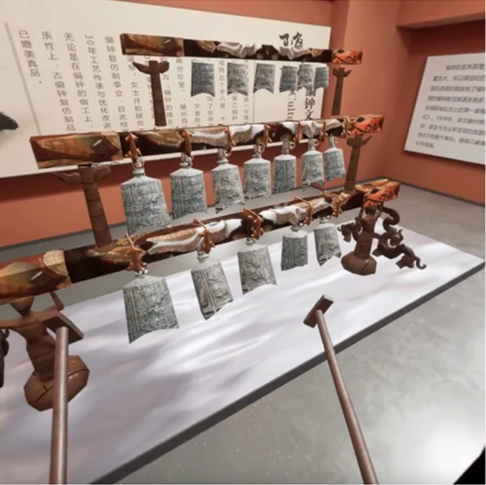
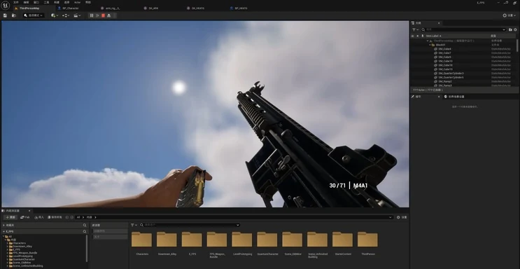
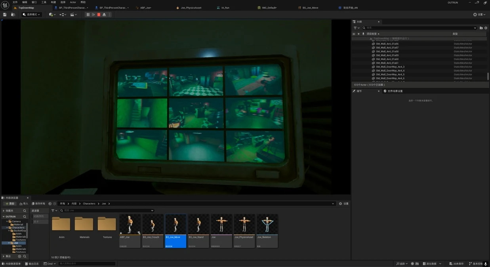

AHBIIOvO / PERSONAL PORTFOLIO
Games &
interactive experiences.
I'm AHBIIOvO. I build games and virtual experiences, with a focus on programming, animation and interaction.
SELECTED WORK
3 PROJECTS / 2026
01 / VR & AICORE DEVELOPER · IEEE VRW 2026
AI-Driven VR Museum
Talk to an AI guide. Play ancient chime bells. A virtual exhibition connecting cultural heritage, speech and interaction.

02 / GAMEPLAYINDEPENDENT DEVELOPER · VIDEO DEMO
First-Person Shooter
An independent FPS prototype, from Blender firearm animation to physical projectiles, destructible targets and hit reactions.

03 / PUZZLE GAMELEAD PROGRAMMER · MULTI-CAMERA
OutRun
A surveillance-based puzzle prototype. Observe multiple camera feeds and use what you see to navigate a third-person character.
Building things
you can interact with.
I'm AHBIIOvO. My work spans game programming, animation and interactive virtual environments, from a conversational VR exhibition to physical FPS systems and multi-camera gameplay.
GitHubAHBIIOvO ↗